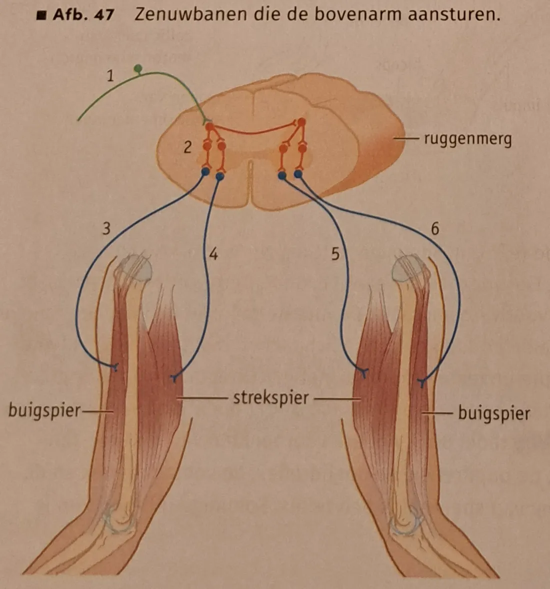

- 7.4.1 Je kunt de functie van reflexen en een reflexboog beschrijven.
- 7.4.2 Je kunt de werking van het autonome (of vegetatieve) zenuwstelsel beschrijven.
Bewuste en onbewuste reacties
- Het animale zenuwstelsel regelt vooral bewuste reacties en stuurt de skeletspieren aan.
- Bewuste beweging: impulsen ontstaan in bewegingscentra van de grote hersenen → schakelneuronen → kleine hersenen → schakelneuronen in hersenstam en ruggenmerg → motorische neuronen → spieren trekken samen.
- Het animale zenuwstelsel doet ook onbewuste dingen: je zintuigen verwerken voortdurend prikkels waar je je niet bewust van bent.
Reflexen en de reflexboog
- Een reflex is een vaste, snelle, onbewuste reactie op een bepaalde prikkel (bijv. hand terugtrekken van een hete pan).
- De weg die impulsen bij een reflex afleggen = de reflexboog: receptor → conductoren in het zenuwstelsel → effector.
- De grote hersenen maken géén deel uit van een reflexboog. Impulsen gaan via sensorische neuronen naar schakelneuronen in ruggenmerg of hersenstam en direct door naar motorische neuronen.
- Daardoor is de weg korter en de reactie sneller.
- Reflexen van romp en ledematen → via schakelneuronen in het ruggenmerg. Reflexen van hoofd en hals → via de hersenstam.
- Er gaan ook impulsen naar de grote hersenen, maar die komen pas aan als de reflex al gebeurd is → je wordt je later bewust van je reactie.
- Meestal: sensorisch neuron → schakelneuron → motorisch neuron. Bij de kniepeesreflex gaat het sensorische neuron ook direct naar het motorische neuron.
| Onderdeel | Voorbeeld: terugtrekreflex (hete pan) |
|---|---|
| Receptor | pijnreceptoren in de huid |
| Conductoren | sensorisch neuron → schakelneuron (ruggenmerg) → motorisch neuron |
| Effector | buigspier (biceps) trekt samen; strekspier (triceps) ontspant |
Soorten reflexen
- Beschermende reflexen: bijv. de terugtrekreflex bij een heet voorwerp.
- De meeste reflexen dienen voor houding en beweging: kleine spanningsverschillen in spieren → reflexmatige correcties, zodat je rechtop blijft staan (o.a. kniepeesreflex, BiNaS 88K).
- Andere voorbeelden: hoestreflex, slikreflex, pupilreflex, ooglidreflex, voetzoolreflex, zuigreflex, niezen en de afscheiding van speeksel.
- Sommige reflexen kun je onderdrukken (via de grote hersenen), andere niet.
Het autonome zenuwstelsel
- Het autonome (vegetatieve) zenuwstelsel staat niet onder invloed van de wil. Het werkt nauw samen met het hormoonstelsel.
- Regelt o.a. de gladde spieren van inwendige organen, de hartspier en klieren.
- Twee delen met een tegengestelde werking: het orthosympatische en het parasympatische zenuwstelsel. Samen handhaven ze de homeostase (BiNaS 88L).
- Elk doelwitorgaan krijgt twee zenuwen: één ortho, één para → orgaan kan worden gestimuleerd of geremd.
- Beide delen zijn steeds actief; per situatie overheerst er één. Centra in de hersenstam coördineren dit.
| Orgaan | Orthosympatisch actie, energie vrijmaken | Parasympatisch rust en herstel |
|---|---|---|
| Pupillen | verwijdt | vernauwt |
| Speeksel | remt afscheiding | stimuleert afscheiding |
| Longen | verhoogt ademfrequentie, verwijdt bronchiën | verlaagt ademfrequentie, vernauwt bronchiën |
| Hart | verhoogt hartslagfrequentie | verlaagt hartslagfrequentie |
| Maag / alvleesklier | remt afscheiding maag- en alvleessap | stimuleert afscheiding maag- en alvleessap |
| Lever / galblaas | stimuleert afgifte glucose (glycogeen → glucose) | stimuleert samentrekking galblaas; glucose → glycogeen |
| Darmen | remt darmsap en darmbeweging | stimuleert darmsap en darmbeweging |
| Bijniermerg | stimuleert afscheiding adrenaline | — |
| Bloedvaten | verwijdt naar skeletspieren | verwijdt naar verteringsstelsel |
| Nieren / urineblaas | remt nieren en samentrekking urineblaas | stimuleert nieren en samentrekking urineblaas |
| Geslachtsorganen | remt werking | stimuleert werking |
Functionele organisatie van het zenuwstelsel
- Centraal zenuwstelsel: hersenen + ruggenmerg. Perifeer zenuwstelsel: alle zenuwen daarbuiten.
- Interne en externe prikkels → zintuigreceptoren → sensorische neuronen → centraal zenuwstelsel.
- Centraal zenuwstelsel → motorische neuronen, verdeeld in:
- animale zenuwstelsel → controle van skeletspieren
- autonome zenuwstelsel (ortho + para) → controle van gladde spieren, hartspieren en klieren
Zelftoets
Tik op een vraag voor het antwoord. Opdrachten 39–49 uit het boek.
Wat is een reflex?
Een vaste, snelle, onbewuste reactie op een bepaalde prikkel.
Uit welke onderdelen bestaat een reflexboog?
Receptor → conductoren in het zenuwstelsel (sensorisch neuron, schakelneuron, motorisch neuron) → effector.
Waarom is een reflex sneller dan een bewuste reactie?
De impulsen gaan niet via de grote hersenen maar direct via schakelneuronen in ruggenmerg of hersenstam → kortere weg.
Wat is bijzonder aan de kniepeesreflex?
Het sensorische neuron geeft impulsen ook direct door aan het motorische neuron (zonder schakelneuron).
Welke twee delen heeft het autonome zenuwstelsel en wat doen ze?
Orthosympatisch: lichaam klaarmaken voor activiteit (energie vrijmaken). Parasympatisch: rust en herstel, bevordert stofwisseling/vertering. Ze werken tegengesteld.
39 · Is de "katachtige reflex" van een doelman een bewuste reactie of een reflex?
Een bewuste reactie. De doelman ziet de bal, de grote hersenen bepalen de beweging (getraind, niet steeds dezelfde vaste reactie). Een reflex verloopt niet via de grote hersenen.

40a · Welke typen neuronen zijn nummer 1, 2 en 3 (afb. 47)?
1 = sensorisch neuron, 2 = schakelneuron, 3 = motorisch neuron.
40b · Welke neuronen geleiden impulsen?
1 (sensorisch), 2 en de schakelneuronen naar de andere kant van het ruggenmerg, 3 (motorisch naar buigspier rechterarm) en 5 (motorisch naar strekspier linkerarm).
41 · Via welk deel van het CZS verloopt de slikreflex?
Via de hersenstam (reflexen van hoofd en hals).
42a · Julia trapt in een punaise. Beschrijf de reflexboog.
Pijnreceptoren in de huid van de voet → sensorische neuronen → schakelneuronen in het ruggenmerg → motorische neuronen → beenspieren (buigspieren) trekken samen → been omhoog.
42b · Wat zijn hier de conductoren, receptoren en effectoren?
Receptoren: pijnreceptoren in de huid. Conductoren: sensorische neuronen, schakelneuronen en motorische neuronen. Effectoren: (buig)spieren van het been.
43a · Jorn sport. Horen neuronen voor een verhoogde hartslag bij animaal, para of ortho?
Orthosympatisch deel van het autonome zenuwstelsel.
43b · Neuronen die de armspieren laten samentrekken?
Animale zenuwstelsel (skeletspieren).
43c · Jorn trapt op iets scherps en trekt zijn been op. Welk zenuwstelsel? Leg uit.
Animale zenuwstelsel: het is wel een reflex, maar de beenspieren zijn skeletspieren en die worden door het animale zenuwstelsel aangestuurd.
43d · Na het eten: neuronen die de spieren in de dunnedarmwand stimuleren?
Parasympatisch deel van het autonome zenuwstelsel.
44 · Mees houdt zijn adem in (a). Later moet hij weer ademhalen (b). Animaal of autonoom?
a: animaal (bewust, onder invloed van de wil). b: autonoom (onbewust, niet onder invloed van de wil).
45 · Waarom vindt de buigreflex van Mats' rechterarm eerder plaats dan de strekreflex van zijn linkerarm?
De impulsen naar de linkerarm moeten via extra schakelneuronen naar de andere kant van het ruggenmerg. Die weg is langer en heeft meer synapsen, dus duurt het langer.
46a · Patiënt met dwarslaesie in de nek: voelt hij de hete thee op zijn hand?
Nee. De impulsen van de pijnreceptoren in de hand (onder de dwarslaesie) kunnen de grote hersenen niet bereiken, en alleen daar ontstaat gevoel.
46b · Kan bij deze patiënt de terugtrekreflex plaatsvinden?
Ja. De reflexboog loopt via het ruggenmerg onder de dwarslaesie; de hersenen zijn niet nodig.
47a · Hoe kan je zenuwstelsel een reflex onderdrukken?
Vanuit de grote hersenen gaan (bewust) impulsen via schakelneuronen naar het ruggenmerg, die de motorische neuronen van de reflex remmen/tegengaan.
47b · Kun je met een ruggenprik je voet in een reflex terugtrekken?
Nee. De sensorische en motorische neuronen zijn verdoofd, dus de reflexboog werkt niet: er komen geen impulsen van de receptoren en niet naar de spieren.
47c · Kun je je voet tijdens de operatie bewust terugtrekken?
Nee. De motorische neuronen zijn verdoofd, dus impulsen vanuit de hersenen bereiken de beenspieren niet.
48a · Parasympatisch neuron naar de darmwand: hoogste impulsfrequentie bij hardlopen of film na maaltijd?
Film na een maaltijd: in rust na het eten is het parasympatische deel actief en stimuleert het de darmbeweging. Bij hardlopen overheerst het orthosympatische deel.
48b · Wat gebeurt er met je hartslag als medicijnen het parasympatische deel remmen?
De hartslagfrequentie stijgt: het parasympatische deel verlaagt de hartslag, dus als dat geremd wordt overheerst het orthosympatische deel.
49a · Stress: hypothalamus → ruggenmerg → bijniermerg → adrenaline. Welk deel van het autonome zenuwstelsel?
Het orthosympatische deel: dat stimuleert de afscheiding van adrenaline door het bijniermerg (lichaam klaar voor actie).
49b · Voordeel dat een stressreactie vooral door hormonen komt?
Hormonen verspreiden zich via het bloed door het hele lichaam, dus ze bereiken veel organen tegelijk en hun werking houdt langer aan.